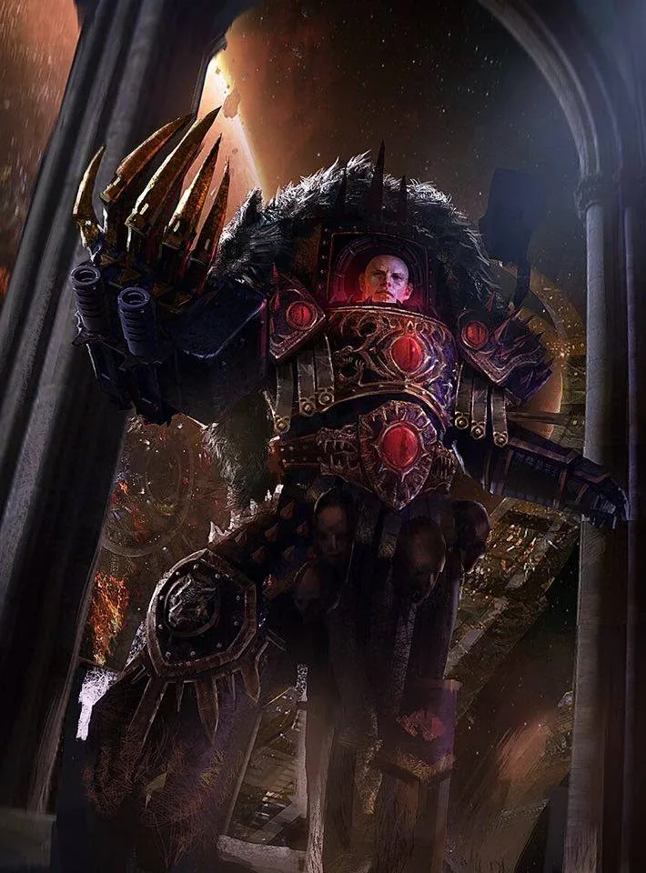
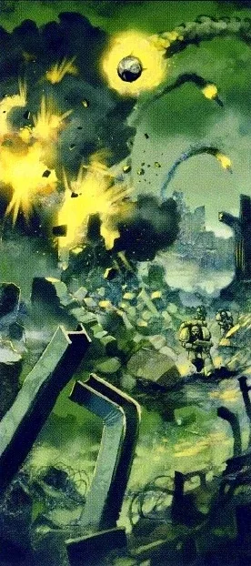
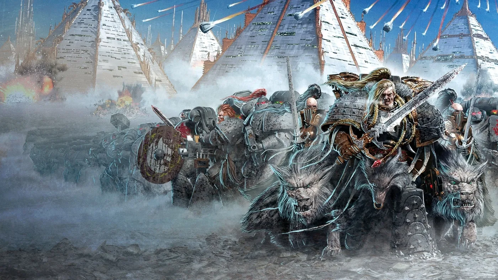
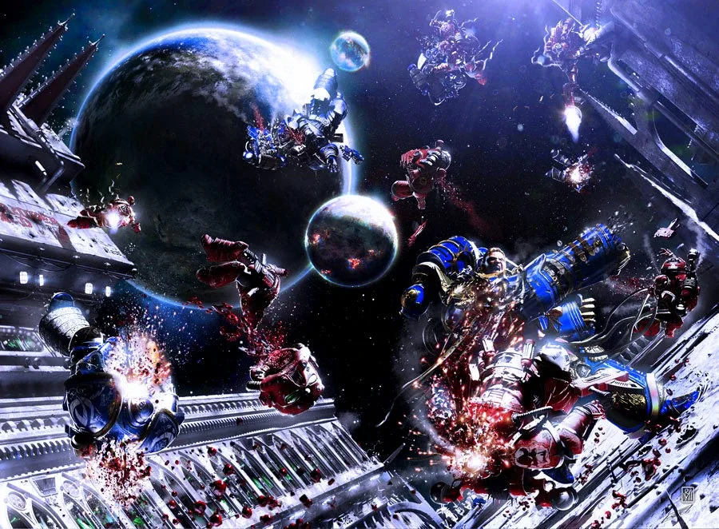
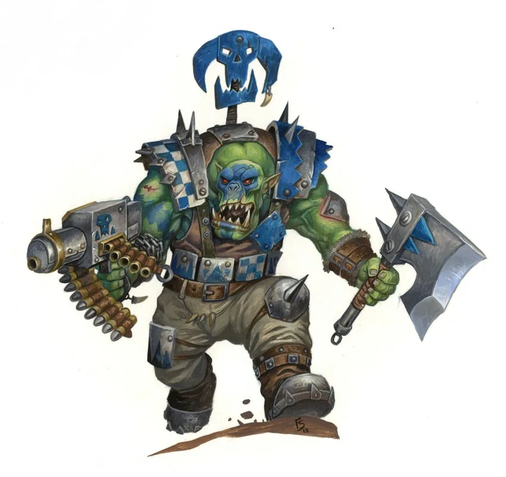

00ก่อนเริ่มอ่าน
นิยาย Warhammer 40,000 ตีพิมพ์โดย Black Library สำนักพิมพ์ของ Games Workshop (หนังสือเป็นภาษาอังกฤษ) มีหลายร้อยเล่ม เลือกเริ่มจากเล่มที่อ่านง่ายและไม่ต้องรู้พื้นหลังมาก่อนจะสนุกที่สุด
เปิดหน้า อภิธานศัพท์ ของเว็บนี้ไว้ข้าง ๆ และใช้ปุ่มค้นหา (กด /) เมื่อเจอชื่อที่ไม่รู้จัก
01เส้นทางแนะนำสำหรับมือใหม่
อ่านเรียงตามนี้เพื่อเข้าใจโลก 40K จากหลายมุม

Eisenhorn: Xenos
Dan Abnett · 2001
เรื่องย่อ: Inquisitor Gregor Eisenhorn ไล่ล่าลัทธินอกรีตข้ามดาว
ทำไมควรอ่าน: เป็นนิยายสืบสวนที่ไม่ต้องรู้อะไรมาก่อน และเห็นชีวิตในจักรวรรดิจากมุมคนธรรมดา
อ่านพื้นหลังในเว็บนี้
Gaunt's Ghosts: First and Only
Dan Abnett · 1999
เรื่องย่อ: ทหารมนุษย์ธรรมดาของกรม Tanith ที่ดาวบ้านเกิดถูกทำลาย
ทำไมควรอ่าน: เห็นสงครามจากสายตาทหารราบ อ่านสนุกแบบหนังสงคราม
อ่านพื้นหลังในเว็บนี้
Ciaphas Cain: For the Emperor
Sandy Mitchell · 2003
เรื่องย่อ: Commissar ขี้ขลาดที่โชคดีจนกลายเป็นวีรบุรุษ
ทำไมควรอ่าน: ตลก อ่านง่าย เหมาะกับคนที่ไม่ชอบเรื่องมืดเกินไป
อ่านพื้นหลังในเว็บนี้
Helsreach
Aaron Dembski-Bowden · 2010
เรื่องย่อ: Black Templars ป้องกันเมือง Helsreach ใน Third War for Armageddon
ทำไมควรอ่าน: เห็นภาพ Space Marine ในสงครามจริงที่โหดและเศร้า
อ่านพื้นหลังในเว็บนี้
Dark Imperium
Guy Haley · 2017
เรื่องย่อ: Guilliman กลับมากอบกู้ Ultramar และเผชิญหน้ากับ Death Guard
ทำไมควรอ่าน: เชื่อมเนื้อเรื่องเก่ากับยุคปัจจุบันของเกม
อ่านพื้นหลังในเว็บนี้02ยุค 30K: The Horus Heresy
ซีรีส์ยาวกว่า 50 เล่ม — สามเล่มแรกคือจุดเริ่มต้นที่ดีที่สุด

Horus Rising
Dan Abnett · 2006
เรื่องย่อ: Great Crusade ช่วงท้าย ผ่านสายตาของ Garviel Loken แห่ง Luna Wolves
ทำไมควรอ่าน: เล่มแรกของซีรีส์ เห็น Horus ตอนยังเป็นวีรบุรุษ
อ่านพื้นหลังในเว็บนี้
False Gods
Graham McNeill · 2006
เรื่องย่อ: Horus บาดเจ็บบน Davin และเริ่มหันไปหา Chaos
ทำไมควรอ่าน: เห็นจุดเปลี่ยนของ Horus
อ่านพื้นหลังในเว็บนี้
Galaxy in Flames
Ben Counter · 2006
เรื่องย่อ: การทรยศที่ Isstvan III
ทำไมควรอ่าน: จบไตรภาคแรก — สงครามกลางเมืองเริ่มต้น
อ่านพื้นหลังในเว็บนี้
A Thousand Sons / Prospero Burns
Graham McNeill / Dan Abnett · 2010
เรื่องย่อ: เรื่องเดียวกันจากสองฝ่าย: Thousand Sons และ Space Wolves
ทำไมควรอ่าน: อ่านคู่กันแล้วเห็นว่าไม่มีใครถูกทั้งหมด
อ่านพื้นหลังในเว็บนี้
Legion
Dan Abnett · 2008
เรื่องย่อ: ความลับของ Alpha Legion
ทำไมควรอ่าน: หักมุมเยอะ เหมาะกับคนชอบปริศนา
อ่านพื้นหลังในเว็บนี้
Know No Fear
Dan Abnett · 2012
เรื่องย่อ: Word Bearers บุก Ultramarines ที่ Calth
ทำไมควรอ่าน: ฉากรบที่ดีที่สุดเล่มหนึ่งของซีรีส์
อ่านพื้นหลังในเว็บนี้
The Master of Mankind
Aaron Dembski-Bowden · 2016
เรื่องย่อ: สงครามลับใน Webway ใต้พระราชวัง และตัวตนของจักรพรรดิ
ทำไมควรอ่าน: เห็นจักรพรรดิและ Custodes ชัดที่สุด
อ่านพื้นหลังในเว็บนี้03ฝ่าย Chaos และเผ่าต่างดาว
สำหรับคนที่อยากเห็นโลกจากมุมของ 'ผู้ร้าย'

Night Lords: Soul Hunter
Aaron Dembski-Bowden · 2010
เรื่องย่อ: หมู่ Night Lords ผู้ทรยศที่ยังยึดถือความแค้นต่อจักรวรรดิ
ทำไมควรอ่าน: ผู้ร้ายที่มีเหตุผลและน่าเห็นใจอย่างไม่น่าเชื่อ
อ่านพื้นหลังในเว็บนี้
The Talon of Horus
Aaron Dembski-Bowden · 2014
เรื่องย่อ: Abaddon รวบรวม Black Legion
ทำไมควรอ่าน: ต้นกำเนิดของ Warmaster แห่ง Chaos
อ่านพื้นหลังในเว็บนี้
The Infinite and the Divine
Robert Rath · 2020
เรื่องย่อ: Trazyn กับ Orikan สองขุนนาง Necron ที่ทะเลาะกันมาหลายล้านปี
ทำไมควรอ่าน: ตลกและลึกซึ้ง เป็นเรื่อง Necron ที่แฟน ๆ ชื่นชอบมาก
อ่านพื้นหลังในเว็บนี้
Brutal Kunnin
Mike Brooks · 2020
เรื่องย่อ: Ork ที่ฉลาดกว่าที่คิด
ทำไมควรอ่าน: เข้าใจสังคม Orks อย่างสนุก
อ่านพื้นหลังในเว็บนี้04หมายเหตุ
ภาพประกอบในหน้านี้เป็นภาพตัวละครหรือเหตุการณ์ที่เกี่ยวข้อง ไม่ใช่ปกหนังสือ ข้อมูลปีคือปีที่ตีพิมพ์ครั้งแรกของฉบับภาษาอังกฤษ